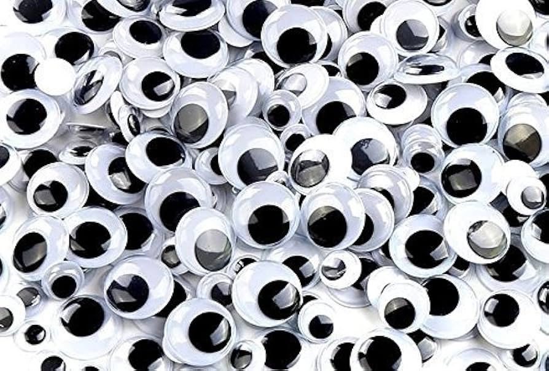
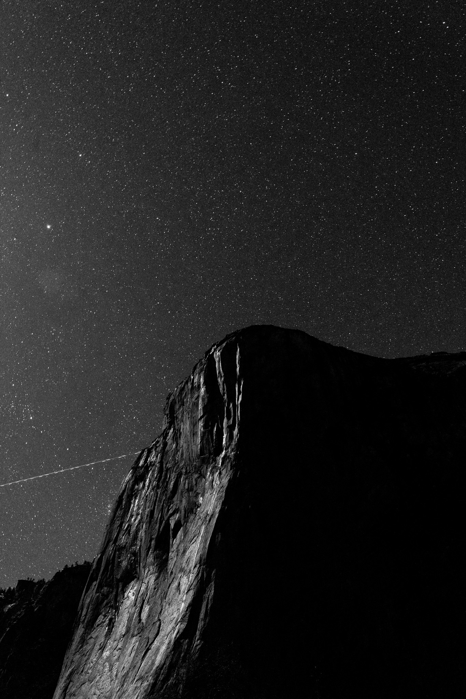
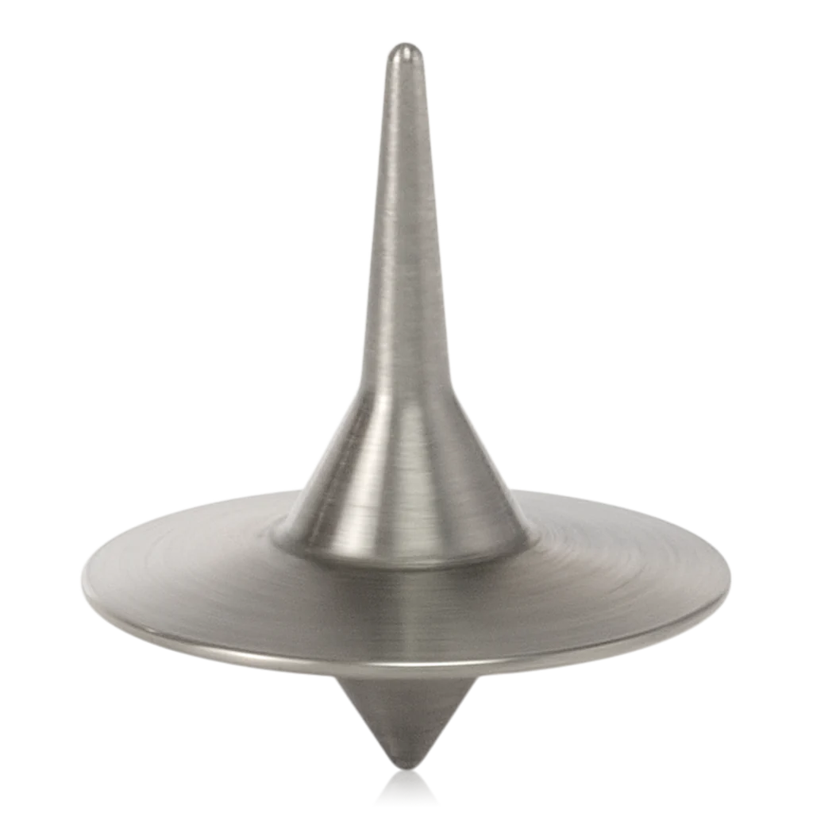

Experiment 5 - Evolutionary Impressions
Mutation rate (%):
Active score:
Exploration rate: fps
Best score:
Description
I used a variety of images ranging from simple items, to landscapes. These are crafted over time using basic shapes which are mutated over time to resemble the image.Images shown at bottom:
name: "Spinning top", credit: "https://www.artofplay.com/cdn/shop/products/TungsteneTop.png?v=1636417098&width=1024"
name: "Mountain", credit: "Mountain by Michael Hein"
name: "Googly", credit: "Googly eyes https://m.media-amazon.com/images/I/61IdJ9TPfKL._AC_UF894,1000_QL80_.jpg"
name: "Stars", credit: "Starry Night, Michael Hein"
Technical
These images are reconstructed using simple shapes such as triangles, rectangles, and circles. The slider represents how much each shape will mutate in position, color, or size. Each inspiration has different design attributes which contribute to its starting shapes, colors, quantity and positions.
Reflection
I learned a lot about how the mutation function works, its inputs, and how to play around with the design parameters to customize each image impression. I tried manipulating a lot of the data values, such as color, position, and size to recreate each image in a unique way.


